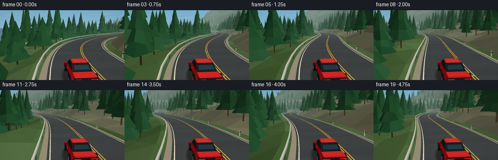
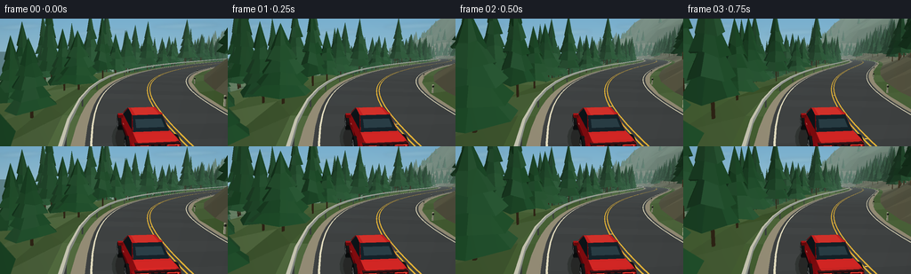

CODING AGENTS AS PIXEL WORLD MODELS
traex/GPT-6.1-Sol · instance_preservation_0029
点击播放 · 原生 RGB 像素
逐轮保存的候选
回放视频、检查图与代码变化。
每份候选均可单独播放。实际图片检查记录在下方工具轨迹中。
候选 01播放与检查图
点击播放 · 原生 RGB 像素


展开代码变化
--- 上一保存版本
+++ 本次保存版本
@@ -0,0 +1,308 @@
+import math, json
+from pathlib import Path
+import numpy as np
+from PIL import Image, ImageDraw, ImageFilter
+import artifact_io
+
+ROOT=Path(__file__).resolve().parent
+SPEC=json.loads((ROOT/'task_spec.json').read_text())
+W,H=SPEC['width'],SPEC['height']
+SCALE=3
+SW,SH=W*SCALE,H*SCALE
+rng=np.random.default_rng(2917)
+SUN=np.array([-0.55,0.78,-0.3]); SUN/=np.linalg.norm(SUN)
+
+def road(s):
+ return np.array([30*np.sin(s/54)+12*np.sin(s/28),3*np.sin(s/95)+0.008*s,s])
+def tangent(s):
+ a=np.array([30/54*np.cos(s/54)+12/28*np.cos(s/28),3/95*np.cos(s/95)+.008,1.]);return a/np.linalg.norm(a)
+def lateral(s):
+ v=tangent(s);return np.array([v[2],0.,-v[0]])/np.linalg.norm(v[[0,2]])
+def point(s,d,y=0):return road(s)+lateral(s)*d+np.array([0,y,0])
+def terrain_height(s,d):
+ ripple=1.6*np.sin(s*.059+d*.12)+1.4*np.sin(s*.131-d*.07)
+ if d < -6.8:
+ u=-d-6.8
+ return u*.56+np.sin(s*.024)*u*.12+ripple*min(1,u/10)+5*np.sin(d*.071+s*.043)*min(1,u/35)
+ if d>6.8:
+ u=d-6.8
+ return -min(36,u*.24)+ripple*min(1,u/10)+max(0,u-90)*.11
+ return -.13
+
+def ground(s,d):return point(s,d,terrain_height(s,d))
+
+class Render:
+ def __init__(self,cam,target):
+ self.cam=cam;self.f=(target-cam);self.f/=np.linalg.norm(self.f)
+ self.r=np.cross(self.f,[0,1,0]);self.r/=np.linalg.norm(self.r)
+ self.u=np.cross(self.r,self.f)
+ self.focal=SW*.89
+ self.buf=np.zeros((SH,SW,3),np.float32)
+ self.depth=np.full((SH,SW),1e9,np.float32)
+ yy=np.arange(SH)[:,None,None]/SH
+ self.buf[:]=np.array([119,174,207])[None,None,:]*(1-yy)+np.array([202,219,213])[None,None,:]*yy
+ def project(self,vs):
+ q=np.asarray(vs)-self.cam
+ z=q@self.f
+ p=np.stack([SW*.5+(q@self.r)*self.focal/np.maximum(z,.001),SH*.48-(q@self.u)*self.focal/np.maximum(z,.001)],axis=1)
+ return p,z
+ def tri(self,v,col,lighting=True,fog=True):
+ v=np.array(v,float);p,z=self.project(v)
+ if z.max()<.45:return
+ if z.min()<.449999:
+ out=[]
+ for i in range(3):
+ a,b=v[i-1],v[i];za,zb=z[i-1],z[i]
+ if (za>=.45)!=(zb>=.45):out.append(a+(b-a)*(.45-za)/(zb-za))
+ if zb>=.45:out.append(b)
+ for i in range(1,len(out)-1):self.tri([out[0],out[i],out[i+1]],col,lighting,fog)
+ return
+ x0=max(0,int(np.floor(p[:,0].min())));x1=min(SW-1,int(np.ceil(p[:,0].max())))
+ y0=max(0,int(np.floor(p[:,1].min())));y1=min(SH-1,int(np.ceil(p[:,1].max())))
+ if x0>x1 or y0>y1:return
+ a,b,c=p
+ denom=(b[1]-c[1])*(a[0]-c[0])+(c[0]-b[0])*(a[1]-c[1])
+ if abs(denom)<1e-6:return
+ xx=np.arange(x0,x1+1)[None,:]+.5;yy=np.arange(y0,y1+1)[:,None]+.5
+ w0=((b[1]-c[1])*(xx-c[0])+(c[0]-b[0])*(yy-c[1]))/denom
+ w1=((c[1]-a[1])*(xx-c[0])+(a[0]-c[0])*(yy-c[1]))/denom
+ w2=1-w0-w1
+ inv=w0/z[0]+w1/z[1]+w2/z[2]
+ dep=1/np.maximum(inv,1e-8)
+ db=self.depth[y0:y1+1,x0:x1+1]
+ mask=(w0>=-.0001)&(w1>=-.0001)&(w2>=-.0001)&(dep<db)
+ if not mask.any():return
+ base=np.array(col,dtype=float)
+ if lighting:
+ n=np.cross(v[1]-v[0],v[2]-v[0]);n/=max(1e-8,np.linalg.norm(n))
+ if n[1]<0:n=-n
+ light=.53+.47*max(0,np.dot(n,SUN))
+ base*=light
+ db[mask]=dep[mask]
+ dest=self.buf[y0:y1+1,x0:x1+1]
+ if fog:
+ k=1-np.exp(-np.maximum(0,dep[mask]-30)/320)
+ dest[mask]=base*(1-k[:,None])+np.array([157,185,186])*k[:,None]
+ else:dest[mask]=base
+ def quad(self,vs,col,lighting=True,fog=True):
+ self.tri([vs[0],vs[1],vs[2]],col,lighting,fog);self.tri([vs[0],vs[2],vs[3]],col,lighting,fog)
+ def box(self,origin,axes,dim,col):
+ x,y,z=axes;dx,dy,dz=np.asarray(dim)/2
+ pts=[origin+x*a*dx+y*b*dy+z*c*dz for a,b,c in [(-1,-1,-1),(1,-1,-1),(1,1,-1),(-1,1,-1),(-1,-1,1),(1,-1,1),(1,1,1),(-1,1,1)]]
+ for ids in [[0,1,2,3],[4,7,6,5],[0,4,5,1],[3,2,6,7],[0,3,7,4],[1,5,6,2]]:self.quad([pts[i] for i in ids],col)
+
+# Deterministic roadside forest, shared by all frames.
+trees=[]
+for s in np.arange(8,610,5.3):
+ for side in [-1,1]:
+ for rank in range(3):
+ ss=s+rng.uniform(-2,2)
+ d=side*(9.5+rank*9+rng.uniform(0,5))
+ trees.append((ss,d,rng.uniform(7,14)*(1 if rank==0 else 1.15),rng.uniform(2.2,3.3),int(rng.integers(0,100000))))
+# Tiny distant forest groups.
+for _ in range(180):
+ trees.append((rng.uniform(10,650),rng.choice([-1,1])*rng.uniform(45,120),rng.uniform(9,17),rng.uniform(2.7,4),int(rng.integers(100000))))
+
+def background(r,t):
+ # Airy alpine ridgelines, coherent in world direction as the camera turns.
+ image=Image.fromarray(np.uint8(np.clip(r.buf,0,255)))
+ dr=ImageDraw.Draw(image)
+ yaw=math.atan2(r.f[0],r.f[2]); shift=-yaw*SW*.85
+ for layer in range(3):
+ pts=[]
+ for x in range(-SW,SW*2+1,12):
+ q=(x-shift)/(SW)
+ h=(.37-layer*.037)+.026*math.sin(q*12+layer)+.025*math.sin(q*25+layer*2)+.012*math.sin(q*52)
+ pts.append((x,SH*h))
+ col=[(133,166,183),(119,152,166),(97,133,143)][layer]
+ dr.polygon(pts+[(SW*2,SH),(-SW,SH)],fill=col)
+ if layer==0:
+ for i in range(1,len(pts)-1):
+ if pts[i][1]<pts[i-1][1] and pts[i][1]<pts[i+1][1]:
+ x,y=pts[i];dr.polygon([(x-12,y+7),(x,y),(x+14,y+8),(x+3,y+5),(x-3,y+9)],fill=(196,211,214))
+ # Thin high clouds.
+ cloud=Image.new('RGBA',(SW,SH));d=ImageDraw.Draw(cloud)
+ for cx,cy,rx in [(75,29,49),(335,49,63),(620,26,74)]:
+ for j in range(4):
+ d.ellipse((cx+shift*.15+j*rx*.34-rx,cy-j*2-5,cx+shift*.15+j*rx*.34+rx,cy+7-j*2),fill=(248,248,230,22))
+ cloud=cloud.filter(ImageFilter.GaussianBlur(5))
+ image=Image.alpha_composite(image.convert('RGBA'),cloud).convert('RGB')
+ r.buf[:]=np.array(image)
+
+def draw_terrain(r,s0):
+ ss=np.arange(s0-28,s0+610,8.)
+ ds=[-220,-155,-105,-70,-45,-29,-19,-12,-7,-5,5,7,12,20,33,55,90,140,220]
+ for i,s in enumerate(ss[:-1]):
+ for j in range(len(ds)-1):
+ d,e=ds[j:j+2];s2=ss[i+1]
+ vs=[ground(s,d),ground(s2,d),ground(s2,e),ground(s,e)]
+ v=math.sin(s*.29+d*.43)*.5+math.sin(s*.09-d*.21)*.5
+ if d<-7 and e>-40:col=np.array([125,126,101])+v*np.array([17,16,12])
+ elif d<-30:col=np.array([85,105,74])+v*12
+ else:col=np.array([83,111,66])+v*12
+ r.quad(vs,col)
+
+def strip(r,s1,s2,d1,d2,col,h=.012):
+ r.quad([point(s1,d1,h),point(s2,d1,h),point(s2,d2,h),point(s1,d2,h)],col,False)
+
+def draw_road(r,s0):
+ ss=np.arange(s0-20,s0+400,2.)
+ for a,b in zip(ss[:-1],ss[1:]):
+ strip(r,a,b,-5.7,5.7,(144,139,119),-.06)
+ shade=math.sin(a*1.17)*1.2
+ strip(r,a,b,-5,5,np.array([65,69,70])+shade,0)
+ for d in [-4.7,4.7]:strip(r,a,b,d-.055,d+.055,(220,218,192),.018)
+ for d in [-.14,.14]:strip(r,a,b,d-.052,d+.052,(222,178,58),.02)
+ # Reflector road studs subtly punctuate the center lines.
+ if int(a//2)%5==0:
+ strip(r,a,a+.12,-.07,.07,(246,205,100),.025)
+ # Guardrail on the valley side follows every curve.
+ for a in np.arange(s0-15,s0+220,4):
+ b=a+4
+ r.quad([point(a,5.85,.62),point(b,5.85,.62),point(b,5.85,.88),point(a,5.85,.88)],(178,187,180))
+ r.quad([point(a,5.85,.88),point(b,5.85,.88),point(b,6.01,.87),point(a,6.01,.87)],(215,218,199))
+ for a in np.arange(math.floor((s0-15)/6)*6,s0+220,6):
+ r.box(point(a,5.95,.35),(lateral(a),np.array([0,1,0]),tangent(a)),(.12,.93,.12),(115,125,119))
+ # white roadside posts on the uphill shoulder
+ if int(a)%12==0:
+ r.box(point(a,-5.7,.44),(lateral(a),np.array([0,1,0]),tangent(a)),(.13,.9,.13),(228,228,201))
+ r.box(point(a,-5.71,.70),(lateral(a),np.array([0,1,0]),tangent(a)),(.15,.19,.15),(53,57,50))
+
+def pine(r,s,d,h,rad,seed):
+ base=ground(s,d)
+ q=base-r.cam;dep=q@r.f
+ if dep<-.5 or dep>490:return
+ p,z=r.project([base+np.array([0,h*.5,0])]);rr=rad*r.focal/max(dep,1)
+ if p[0,0]+rr<0 or p[0,0]-rr>SW:return
+ sr=np.random.default_rng(seed)
+ axes=(np.array([1.,0,0]),np.array([0.,1,0]),np.array([0.,0,1]))
+ r.box(base+np.array([0,h*.27,0]),axes,(.22,h*.54,.23),(91,75,48))
+ # Stacked irregular boughs, tapering to a needle-like crown.
+ n=8
+ for level in range(5):
+ yy=h*(.17+level*.148);width=rad*(1-level*.17)
+ top=base+np.array([0,yy+h*.36,0])
+ ring=[]
+ for k in range(n):
+ a=k*math.tau/n+seed*.001
+ rr=width*sr.uniform(.86,1.08)
+ ring.append(base+np.array([rr*math.cos(a),yy+sr.uniform(-.3,.25),rr*math.sin(a)]))
+ for k in range(n):
+ c=np.array([39,85,51])+sr.uniform(-5,8)
+ r.tri([ring[k],ring[(k+1)%n],top],c)
+
+
+def draw_car(r,s,t):
+ fw=tangent(s);right=lateral(s);up=np.cross(fw,right);up/=np.linalg.norm(up)
+ origin=point(s,2.1,.06)
+ def P(x,y,z):return origin+right*x+up*y+fw*z
+ def Q(coords,col,lit=True):r.quad([P(*p) for p in coords],col,lit,False)
+ def B(x,y,z,dim,col):r.box(P(x,y,z),(right,up,fw),dim,col)
+ # Soft, broad contact shadow and dark underbody.
+ for scale,col in [(1.15,(51,55,54)),(1.0,(41,43,42))]:
+ cen=P(.23,.012,-.12)
+ ring=[P(.23+1.17*scale*math.cos(a),.015,-.12+2.45*scale*math.sin(a)) for a in np.linspace(0,math.tau,25)]
+ for a,b in zip(ring[:-1],ring[1:]):r.tri([cen,a,b],col,False,False)
+ B(0,.43,0,(1.9,.25,4.24),(25,27,29))
+ # Rounded monocoque surface, low hood and sculpted rear deck.
+ sections=[(-2.27,.83,.86),(-2.13,1.00,1.02),(-1.6,1.01,1.06),(-.75,1.00,1.04),(.72,1.00,1.02),(1.7,.94,.89),(2.2,.82,.77)]
+ rings=[]
+ for z,w,top in sections:
+ rings.append([P(-w*.86,.43,z),P(-w,.63,z),P(-w,.83*top,z),P(-w*.81,top,z),P(w*.81,top,z),P(w,.83*top,z),P(w,.63,z),P(w*.86,.43,z)])
+ colors=[(138,16,25),(181,27,32),(211,42,42),(224,46,45),(192,25,30),(160,19,27),(114,14,22),(80,14,21)]
+ for i in range(len(rings)-1):
+ for k in range(8):r.quad([rings[i][k],rings[i+1][k],rings[i+1][(k+1)%8],rings[i][(k+1)%8]],colors[k],True,False)
+ r.quad([rings[0][1],rings[0][6],rings[0][5],rings[0][2]],(171,22,31),True,False)
+ r.quad([rings[-1][1],rings[-1][2],rings[-1][5],rings[-1][6]],(167,23,29),True,False)
+ # Cabin: glass slopes join a gently curved red roof.
+ Q([(-.8,1.025,-1.43),(.8,1.025,-1.43),(.69,1.55,-.64),(-.69,1.55,-.64)],(25,40,48))
+ Q([(-.71,1.55,-.65),(.71,1.55,-.65),(.7,1.57,.52),(-.7,1.57,.52)],(209,40,39))
+ Q([(-.7,1.57,.52),(.7,1.57,.52),(.81,1.015,1.25),(-.81,1.015,1.25)],(43,66,76))
+ # Roof center sheen and the rear-window sky reflection.
+ Q([(-.57,1.556,-.62),(.56,1.556,-.62),(.57,1.58,.47),(-.56,1.58,.47)],(224,57,50))
+ Q([(-.63,1.17,-1.23),(.63,1.17,-1.23),(.60,1.43,-.82),(-.60,1.43,-.82)],(47,68,77))
+ for side in [-1,1]:
+ Q([(side*.805,1.04,-1.38),(side*.702,1.52,-.6),(side*.703,1.54,.48),(side*.86,1.015,1.23)],(32,47,53))
+ # pillars and upper window trim
+ Q([(side*.805,1.03,-1.42),(side*.69,1.56,-.64),(side*.722,1.56,-.56),(side*.84,1.03,-1.29)],(159,22,30))
+ Q([(side*.735,1.035,-.17),(side*.71,1.54,-.19),(side*.71,1.54,-.075),(side*.745,1.035,-.05)],(17,24,27))
+ Q([(side*.703,1.56,.45),(side*.86,1.02,1.26),(side*.87,1.02,1.36),(side*.72,1.56,.56)],(185,31,34))
+ B(side*1.06,1.06,.82,(.25,.16,.29),(182,28,31))
+ B(side*1.012,.89,.02,(.021,.035,.21),(216,117,109))
+ # fine lower door crease
+ Q([(side*1.006,.54,-.92),(side*1.006,.57,-.92),(side*1.006,.57,1.03),(side*1.006,.54,1.03)],(99,14,22))
+ # Rear fascia, crisp paired LED tail lights and central license plate.
+ Q([(-.84,.52,-2.279),(.84,.52,-2.279),(.84,.70,-2.279),(-.84,.70,-2.279)],(29,28,31))
+ for side in [-1,1]:
+ x1,x2=side*.36,side*.83
+ Q([(x1,.785,-2.284),(x2,.785,-2.284),(x2,.913,-2.284),(x1,.913,-2.284)],(91,10,18),False)
+ Q([(x1,.84,-2.292),(x2,.84,-2.292),(x2,.886,-2.292),(x1,.886,-2.292)],(255,64,51),False)
+ Q([(x2,.787,-2.293),(x2-side*.035,.787,-2.293),(x2-side*.035,.881,-2.293),(x2,.881,-2.293)],(255,86,61),False)
+ Q([(-.245,.61,-2.29),(.245,.61,-2.29),(.245,.745,-2.29),(-.245,.745,-2.29)],(210,214,194),False)
+ for x in np.linspace(-.16,.15,6):Q([(x,.65,-2.294),(x+.027,.65,-2.294),(x+.027,.708,-2.294),(x,.708,-2.294)],(48,54,58),False)
+ B(0,.92,-2.23,(1.78,.055,.18),(67,30,34))
+ # chrome exhausts
+ for x in [-.68,.68]:B(x,.49,-2.29,(.22,.10,.11),(167,171,166));B(x,.495,-2.35,(.15,.055,.015),(25,25,26))
+ # Four cylindrical tires, alloy wheels, hub and spokes.
+ for z in [-1.47,1.43]:
+ for side in [-1,1]:
+ x=side*.97;yc=.46;rad=.435
+ n=20
+ for k in range(n):
+ a=k*math.tau/n;b=(k+1)*math.tau/n
+ coords=[(x-side*.12,yc+rad*math.sin(a),z+rad*math.cos(a)),(x+side*.15,yc+rad*math.sin(a),z+rad*math.cos(a)),(x+side*.15,yc+rad*math.sin(b),z+rad*math.cos(b)),(x-side*.12,yc+rad*math.sin(b),z+rad*math.cos(b))]
+ Q(coords,(27,29,30))
+ c=P(x+side*.155,yc,z)
+ va=P(x+side*.155,yc+rad*math.sin(a),z+rad*math.cos(a));vb=P(x+side*.155,yc+rad*math.sin(b),z+rad*math.cos(b))
+ r.tri([c,va,vb],(20,23,26),True,False)
+ rr=.29
+ va=P(x+side*.163,yc+rr*math.sin(a),z+rr*math.cos(a));vb=P(x+side*.163,yc+rr*math.sin(b),z+rr*math.cos(b))
+ r.tri([c+right*side*.008,va,vb],(87,92,96),True,False)
+ # Spokes rotate as the car speeds ahead.
+ for k in range(5):
+ a=k*math.tau/5+t*24/.435
+ w=.095
+ Q([(x+side*.17,yc+.07*math.sin(a-w),z+.07*math.cos(a-w)),(x+side*.17,yc+.275*math.sin(a-w),z+.275*math.cos(a-w)),(x+side*.17,yc+.275*math.sin(a+w),z+.275*math.cos(a+w)),(x+side*.17,yc+.07*math.sin(a+w),z+.07*math.cos(a+w))],(192,199,200))
+ # Front lights visible in glimpses on the fenders.
+ for side in [-1,1]:Q([(side*.59,.82,1.81),(side*.82,.78,1.93),(side*.77,.89,1.8),(side*.57,.91,1.74)],(210,222,212))
+
+
+def frame(t):
+ s=42+t*24
+ fw=tangent(s);right=lateral(s)
+ base=point(s,2.1)
+ # A restrained stabilized chase camera, offset to reveal the car's right flank.
+ cam=base-fw*9.6+right*2.4+np.array([0,4.6,0])
+ target=base+fw*15.5+np.array([0,.8,0])
+ r=Render(cam,target)
+ background(r,t);draw_terrain(r,s);draw_road(r,s)
+ for tree in trees:
+ if s-25<tree[0]<s+490:pine(r,*tree)
+ # Motion streaking in the fast peripheral scenery; car remains crisp.
+ bg=np.uint8(np.clip(r.buf,0,255))
+ yy,xx=np.mgrid[0:SH,0:SW]
+ amount=np.clip((np.abs(xx-SW*.5)/(SW*.5))**1.5,0,1)*1.8
+ # Only the nearby forest/ground gets directional shutter blur.
+ amount*=np.clip((r.depth<55)*(yy/SH-.22)*2,0,1)
+ dx=(xx-SW*.51)/SW*amount*2.0
+ dy=(yy-SH*.37)/SH*amount
+ samplex=np.clip(np.rint(xx-dx).astype(int),0,SW-1)
+ sampley=np.clip(np.rint(yy-dy).astype(int),0,SH-1)
+ r.buf[:]=bg*.65+bg[sampley,samplex]*.35
+ draw_car(r,s,t)
+ image=Image.fromarray(np.uint8(np.clip(r.buf,0,255))).resize((W,H),Image.Resampling.LANCZOS)
+ a=np.asarray(image).astype(float)
+ # Subtle cinematic contrast and warm sun / cool atmospheric shadows.
+ a=(a-112)*1.045+112
+ a[:,:,0]*=1.018;a[:,:,2]*=.985
+ yy,xx=np.mgrid[0:H,0:W];v=1-.085*((xx-W*.5)/(W*.7))**2-.035*((yy-H*.5)/H)**2
+ a*=v[:,:,None]
+ return np.uint8(np.clip(a,0,255))
+
+if __name__=='__main__':
+ frames=[]
+ for i in range(SPEC['frames']):
+ frames.append(frame(i/SPEC['fps']))
+ print(f'Frame {i+1}/{SPEC["frames"]}',flush=True)
+ artifact_io.save(np.stack(frames),ROOT)
+ print('Saved RGB video artifacts.',flush=True)
候选 02播放与检查图
点击播放 · 原生 RGB 像素

展开代码变化
--- 上一保存版本
+++ 本次保存版本
@@ -112,7 +112,7 @@
pts=[]
for x in range(-SW,SW*2+1,12):
q=(x-shift)/(SW)
- h=(.37-layer*.037)+.026*math.sin(q*12+layer)+.025*math.sin(q*25+layer*2)+.012*math.sin(q*52)
+ h=(.19-layer*.022)+.036*math.sin(q*12+layer)+.025*math.sin(q*25+layer*2)+.012*math.sin(q*52)
pts.append((x,SH*h))
col=[(133,166,183),(119,152,166),(97,133,143)][layer]
dr.polygon(pts+[(SW*2,SH),(-SW,SH)],fill=col)
@@ -272,8 +272,8 @@
fw=tangent(s);right=lateral(s)
base=point(s,2.1)
# A restrained stabilized chase camera, offset to reveal the car's right flank.
- cam=base-fw*9.6+right*2.4+np.array([0,4.6,0])
- target=base+fw*15.5+np.array([0,.8,0])
+ cam=base-fw*12.7+right*2.9+np.array([0,5.3,0])
+ target=base+fw*7.0+np.array([0,.8,0])
r=Render(cam,target)
background(r,t);draw_terrain(r,s);draw_road(r,s)
for tree in trees:
候选 03播放与检查图
可观测工具轨迹
实际执行的命令与返回图片。
命令 1exit 0
/bin/bash -lc 'ls -la && cat prompt.txt && cat GENERATION_RULES.md && cat task_spec.json'
命令 2exit 0
/bin/bash -lc 'cat artifact_io.py'
命令 3exit 1
/bin/bash -lc "mkdir -p .tmp && cat > generate.py <<'PY'
import math, json
from pathlib import Path
import numpy as np
from PIL import Image, ImageDraw, ImageFilter
import artifact_io
ROOT=Path(__file__).resolve().parent
SPEC=json.loads((ROOT/'task_spec.json').read_text())
W,H=SPEC['width'],SPEC['height']
SCALE=3
SW,SH=W*SCALE,H*SCALE
rng=np.random.default_rng(2917)
SUN=np.array([-0.55,0.78,-0.3]); SUN/=np.linalg.norm(SUN)
def road(s):
return np.array([30*np.sin(s/54)+12*np.sin(s/28),3*np.sin(s/95)+0.008*s,s])
def tangent(s):
a=np.array([30/54*np.cos(s/54)+12/28*np.cos(s/28),3/95*np.cos(s/95)+.008,1.]);return a/np.linalg.norm(a)
def lateral(s):
v=tangent(s);return np.array([v[2],0.,-v[0]])/np.linalg.norm(v[[0,2]])
def point(s,d,y=0):return road(s)+lateral(s)*d+np.array([0,y,0])
def terrain_height(s,d):
ripple=1.6*np.sin(s*.059+d*.12)+1.4*np.sin(s*.131-d*.07)
if d < -6.8:
u=-d-6.8
return u*.56+np.sin(s*.024)*u*.12+ripple*min(1,u/10)+5*np.sin(d*.071+s*.043)*min(1,u/35)
if d>6.8:
u=d-6.8
return -min(36,u*.24)+ripple*min(1,u/10)+max(0,u-90)*.11
return -.13
def ground(s,d):return point(s,d,terrain_height(s,d))
class Render:
def __init__(self,cam,target):
self.cam=cam;self.f=(target-cam);self.f/=np.linalg.norm(self.f)
self.r=np.cross(self.f,[0,1,0]);self.r/=np.linalg.norm(self.r)
self.u=np.cross(self.r,self.f)
self.focal=SW*.89
self.buf=np.zeros((SH,SW,3),np.float32)
self.depth=np.full((SH,SW),1e9,np.float32)
yy=np.arange(SH)[:,None,None]/SH
self.buf[:]=np.array([119,174,207])[None,None,:]*(1-yy)+np.array([202,219,213])[None,None,:]*yy
def project(self,vs):
q=np.asarray(vs)-self.cam
z=q@self.f
p=np.stack([SW*.5+(q@self.r)*self.focal/np.maximum(z,.001),SH*.48-(q@self.u)*self.focal/np.maximum(z,.001)],axis=1)
return p,z
def tri(self,v,col,lighting=True,fog=True):
v=np.array(v,float);p,z=self.project(v)
if z.max()<.45:return
if z.min()<.45:
out=[]
for i in range(3):
a,b=v[i-1],v[i];za,zb=z[i-1],z[i]
if (za>=.45)"'!=(zb>=.45):out.append(a+(b-a)*(.45-za)/(zb-za))
if zb>=.45:out.append(b)
for i in range(1,len(out)-1):self.tri([out[0],out[i],out[i+1]],col,lighting,fog)
return
x0=max(0,int(np.floor(p[:,0].min())));x1=min(SW-1,int(np.ceil(p[:,0].max())))
y0=max(0,int(np.floor(p[:,1].min())));y1=min(SH-1,int(np.ceil(p[:,1].max())))
if x0>x1 or y0>y1:return
a,b,c=p
denom=(b[1]-c[1])*(a[0]-c[0])+(c[0]-b[0])*(a[1]-c[1])
if abs(denom)<1e-6:return
xx=np.arange(x0,x1+1)[None,:]+.5;yy=np.arange(y0,y1+1)[:,None]+.5
w0=((b[1]-c[1])*(xx-c[0])+(c[0]-b[0])*(yy-c[1]))/denom
w1=((c[1]-a[1])*(xx-c[0])+(a[0]-c[0])*(yy-c[1]))/denom
w2=1-w0-w1
inv=w0/z[0]+w1/z[1]+w2/z[2]
dep=1/np.maximum(inv,1e-8)
db=self.depth[y0:y1+1,x0:x1+1]
mask=(w0>=-.0001)&(w1>=-.0001)&(w2>=-.0001)&(dep<db)
if not mask.any():return
base=np.array(col,dtype=float)
if lighting:
n=np.cross(v[1]-v[0],v[2]-v[0]);n/=max(1e-8,np.linalg.norm(n))
if n[1]<0:n=-n
light=.53+.47*max(0,np.dot(n,SUN))
base*=light
db[mask]=dep[mask]
dest=self.buf[y0:y1+1,x0:x1+1]
if fog:
k=1-np.exp(-np.maximum(0,dep[mask]-30)/320)
dest[mask]=base*(1-k[:,None])+np.array([157,185,186])*k[:,None]
else:dest[mask]=base
def quad(self,vs,col,lighting=True,fog=True):
self.tri([vs[0],vs[1],vs[2]],col,lighting,fog);self.tri([vs[0],vs[2],vs[3]],col,lighting,fog)
def box(self,origin,axes,dim,col):
x,y,z=axes;dx,dy,dz=np.asarray(dim)/2
pts=[origin+x*a*dx+y*b*dy+z*c*dz for a,b,c in [(-1,-1,-1),(1,-1,-1),(1,1,-1),(-1,1,-1),(-1,-1,1),(1,-1,1),(1,1,1),(-1,1,1)]]
for ids in [[0,1,2,3],[4,7,6,5],[0,4,5,1],[3,2,6,7],[0,3,7,4],[1,5,6,2]]:self.quad([pts[i] for i in ids],col)
# Deterministic roadside forest, shared by all frames.
trees=[]
for s in np.arange(8,610,5.3):
for side in [-1,1]:
for rank in range(3):
ss=s+rng.uniform(-2,2)
d=side*(9.5+rank*9+rng.uniform(0,5))
trees.append((ss,d,rng.uniform(7,14)*(1 if rank==0 else 1.15),rng.uniform(2.2,3.3),int(rng.integers(0,100000))))
# Tiny distant forest groups.
for _ in range(180):
trees.append((rng.uniform(10,650),rng.choice([-1,1])*rng.uniform(45,120),rng.uniform(9,17),rng.uniform(2.7,4),int(rng.integers(100000))))
def background(r,t):
# Airy alpine ridgelines, coherent in world direction as the camera turns.
image=Image.fromarray(np.uint8(np.clip(r.buf,0,255)))
dr=ImageDraw.Draw(image)
yaw=math.atan2(r.f[0],r.f[2]); shift=-yaw*SW*.85
for layer in range(3):
pts=[]
for x in range(-SW,SW*2+1,12):
q=(x-shift)/(SW)
h=(.37-layer*.037)+.026*math.sin(q*12+layer)+.025*math.sin(q*25+layer*2)+.012*math.sin(q*52)
pts.append((x,SH*h))
col=[(133,166,183),(119,152,166),(97,133,143)][layer]
dr.polygon(pts+[(SW*2,SH),(-SW,SH)],fill=col)
if layer==0:
for i in range(1,len(pts)-1):
if pts[i][1]<pts[i-1][1] and pts[i][1]<pts[i+1][1]:
x,y=pts[i];dr.polygon([(x-12,y+7),(x,y),(x+14,y+8),(x+3,y+5),(x-3,y+9)],fill=(196,211,214))
# Thin high clouds.
cloud=Image.new('"'RGBA',(SW,SH));d=ImageDraw.Draw(cloud)
for cx,cy,rx in [(75,29,49),(335,49,63),(620,26,74)]:
for j in range(4):
d.ellipse((cx+shift*.15+j*rx*.34-rx,cy-j*2-5,cx+shift*.15+j*rx*.34+rx,cy+7-j*2),fill=(248,248,230,22))
cloud=cloud.filter(ImageFilter.GaussianBlur(5))
image=Image.alpha_composite(image.convert('RGBA'),cloud).convert('RGB')
r.buf[:]=np.array(image)
def draw_terrain(r,s0):
ss=np.arange(s0-28,s0+610,8.)
ds=[-220,-155,-105,-70,-45,-29,-19,-12,-7,-5,5,7,12,20,33,55,90,140,220]
for i,s in enumerate(ss[:-1]):
for j in range(len(ds)-1):
d,e=ds[j:j+2];s2=ss[i+1]
vs=[ground(s,d),ground(s2,d),ground(s2,e),ground(s,e)]
v=math.sin(s*.29+d*.43)*.5+math.sin(s*.09-d*.21)*.5
if d<-7 and e>-40:col=np.array([125,126,101])+v*np.array([17,16,12])
elif d<-30:col=np.array([85,105,74])+v*12
else:col=np.array([83,111,66])+v*12
r.quad(vs,col)
def strip(r,s1,s2,d1,d2,col,h=.012):
r.quad([point(s1,d1,h),point(s2,d1,h),point(s2,d2,h),point(s1,d2,h)],col,False)
def draw_road(r,s0):
ss=np.arange(s0-20,s0+400,2.)
for a,b in zip(ss[:-1],ss[1:]):
strip(r,a,b,-5.7,5.7,(144,139,119),-.06)
shade=math.sin(a*1.17)*1.2
strip(r,a,b,-5,5,np.array([65,69,70])+shade,0)
for d in [-4.7,4.7]:strip(r,a,b,d-.055,d+.055,(220,218,192),.018)
for d in [-.14,.14]:strip(r,a,b,d-.052,d+.052,(222,178,58),.02)
# Reflector road studs subtly punctuate the center lines.
if int(a//2)%5==0:
strip(r,a,a+.12,-.07,.07,(246,205,100),.025)
# Guardrail on the valley side follows every curve.
for a in np.arange(s0-15,s0+220,4):
b=a+4
r.quad([point(a,5.85,.62),point(b,5.85,.62),point(b,5.85,.88),point(a,5.85,.88)],(178,187,180))
r.quad([point(a,5.85,.88),point(b,5.85,.88),point(b,6.01,.87),point(a,6.01,.87)],(215,218,199))
for a in np.arange(math.floor((s0-15)/6)*6,s0+220,6):
r.box(point(a,5.95,.35),(lateral(a),np.array([0,1,0]),tangent(a)),(.12,.93,.12),(115,125,119))
# white roadside posts on the uphill shoulder
if int(a)%12==0:
r.box(point(a,-5.7,.44),(lateral(a),np.array([0,1,0]),tangent(a)),(.13,.9,.13),(228,228,201))
r.box(point(a,-5.71,.70),(lateral(a),np.array([0,1,0]),tangent(a)),(.15,.19,.15),(53,57,50))
def pine(r,s,d,h,rad,seed):
base=ground(s,d)
q=base-r.cam;dep=q@r.f
if dep<-.5 or dep>490:return
p,z=r.project([base+np.array([0,h*.5,0])]);rr=rad*r.focal/max(dep,1)
if p[0,0]+rr<0 or p[0,0]-rr>SW:return
sr=np.random.default_rng(seed)
axes=(np.array([1.,0,0]),np.array([0.,1,0]),np.array([0.,0,1]))
r.box(base+np.array([0,h*.27,0]),axes,(.22,h*.54,.23),(91,75,48))
# Stacked irregular boughs, tapering to a needle-like crown.
n=8
for level in range(5):
yy=h*(.17+level*.148);width=rad*(1-level*.17)
top=base+np.array([0,yy+h*.36,0])
ring=[]
for k in range(n):
a=k*math.tau/n+seed*.001
rr=width*sr.uniform(.86,1.08)
ring.append(base+np.array([rr*math.cos(a),yy+sr.uniform(-.3,.25),rr*math.sin(a)]))
for k in range(n):
c=np.array([39,85,51])+sr.uniform(-5,8)
r.tri([ring[k],ring[(k+1)%n],top],c)
def draw_car(r,s,t):
fw=tangent(s);right=lateral(s);up=np.cross(fw,right);up/=np.linalg.norm(up)
origin=point(s,2.1,.06)
def P(x,y,z):return origin+right*x+up*y+fw*z
def Q(coords,col,lit=True):r.quad([P(*p) for p in coords],col,lit,False)
def B(x,y,z,dim,col):r.box(P(x,y,z),(right,up,fw),dim,col)
# Soft, broad contact shadow and dark underbody.
for scale,col in [(1.15,(51,55,54)),(1.0,(41,43,42))]:
cen=P(.23,.012,-.12)
ring=[P(.23+1.17*scale*math.cos(a),.015,-.12+2.45*scale*math.sin(a)) for a in np.linspace(0,math.tau,25)]
for a,b in zip(ring[:-1],ring[1:]):r.tri([cen,a,b],col,False,False)
B(0,.43,0,(1.9,.25,4.24),(25,27,29))
# Rounded monocoque surface, low hood and sculpted rear deck.
sections=[(-2.27,.83,.86),(-2.13,1.00,1.02),(-1.6,1.01,1.06),(-.75,1.00,1.04),(.72,1.00,1.02),(1.7,.94,.89),(2.2,.82,.77)]
rings=[]
for z,w,top in sections:
rings.append([P(-w*.86,.43,z),P(-w,.63,z),P(-w,.83*top,z),P(-w*.81,top,z),P(w*.81,top,z),P(w,.83*top,z),P(w,.63,z),P(w*.86,.43,z)])
colors=[(138,16,25),(181,27,32),(211,42,42),(224,46,45),(192,25,30),(160,19,27),(114,14,22),(80,14,21)]
for i in range(len(rings)-1):
for k in range(8):r.quad([rings[i][k],rings[i+1][k],rings[i+1][(k+1)%8],rings[i][(k+1)%8]],colors[k],True,False)
r.quad([rings[0][1],rings[0][6],rings[0][5],rings[0][2]],(171,22,31),True,False)
r.quad([rings[-1][1],rings[-1][2],rings[-1][5],rings[-1][6]],(167,23,29),True,False)
# Cabin: glass slopes join a gently curved red roof.
Q([(-.8,1.025,-1.43),(.8,1.025,-1.43),(.69,1.55,-.64),(-.69,1.55,-.64)],(25,40,48))
Q([(-.71,1.55,-.65),(.71,1.55,-.65),(.7,1.57,.52),(-.7,1.57,.52)],(209,40,39))
Q([(-.7,1.57,.52),(.7,1.57,.52),(.81,1.015,1.25),(-.81,1.015,1.25)],(43,66,76))
# Roof center sheen and the rear-window sky reflection.
Q([(-.57,1.556,-.62),(.56,1.556,-.62),(.57,1.58,.47),(-.56,1.58,.47)],(224,57,50))
Q([(-.63,1.17,-1.23),(.63,1.17,-1.23),(.60,1.43,-.82),(-.60,1.43,-.82)],(47,68,77))
for side in [-1,1]:
Q([(side*.805,1.04,-1.38),(side*.702,1.52,-.6),(side*.703,1.54,.48),(side*.86,1.015,1.23)],(32,47,53))
# pillars and upper window trim
Q([(side*.805,1.03,-1.42),(side*.69,1.56,-.64),(side*.722,1.56,-.56),(side*.84,1.03,-1.29)],(159,22,30))
Q([(side*.735,1.035,-.17),(side*.71,1.54,-.19),(side*.71,1.54,-.075),(side*.745,1.035,-.05)],(17,24,27))
Q([(side*.703,1.56,.45),(side*.86,1.02,1.26),(side*.87,1.02,1.36),(side*.72,1.56,.56)],(185,31,34))
B(side*1.06,1.06,.82,(.25,.16,.29),(182,28,31))
B(side*1.012,.89,.02,(.021,.035,.21),(216,117,109))
# fine lower door crease
Q([(side*1.006,.54,-.92),(side*1.006,.57,-.92),(side*1.006,.57,1.03),(side*1.006,.54,1.03)],(99,14,22))
# Rear fascia, crisp paired LED tail lights and central license plate.
Q([(-.84,.52,-2.279),(.84,.52,-2.279),(.84,.70,-2.279),(-.84,.70,-2.279)],(29,28,31))
for side in [-1,1]:
x1,x2=side*.36,side*.83
Q([(x1,.785,-2.284),(x2,.785,-2.284),(x2,.913,-2.284),(x1,.913,-2.284)],(91,10,18),False)
Q([(x1,.84,-2.292),(x2,.84,-2.292),(x2,.886,-2.292),(x1,.886,-2.292)],(255,64,51),False)
Q([(x2,.787,-2.293),(x2-side*.035,.787,-2.293),(x2-side*.035,.881,-2.293),(x2,.881,-2.293)],(255,86,61),False)
Q([(-.245,.61,-2.29),(.245,.61,-2.29),(.245,.745,-2.29),(-.245,.745,-2.29)],(210,214,194),False)
for x in np.linspace(-.16,.15,6):Q([(x,.65,-2.294),(x+.027,.65,-2.294),(x+.027,.708,-2.294),(x,.708,-2.294)],(48,54,58),False)
B(0,.92,-2.23,(1.78,.055,.18),(67,30,34))
# chrome exhausts
for x in [-.68,.68]:B(x,.49,-2.29,(.22,.10,.11),(167,171,166));B(x,.495,-2.35,(.15,.055,.015),(25,25,26))
# Four cylindrical tires, alloy wheels, hub and spokes.
for z in [-1.47,1.43]:
for side in [-1,1]:
x=side*.97;yc=.46;rad=.435
n=20
for k in range(n):
a=k*math.tau/n;b=(k+1)*math.tau/n
coords=[(x-side*.12,yc+rad*math.sin(a),z+rad*math.cos(a)),(x+side*.15,yc+rad*math.sin(a),z+rad*math.cos(a)),(x+side*.15,yc+rad*math.sin(b),z+rad*math.cos(b)),(x-side*.12,yc+rad*math.sin(b),z+rad*math.cos(b))]
Q(coords,(27,29,30))
c=P(x+side*.155,yc,z)
va=P(x+side*.155,yc+rad*math.sin(a),z+rad*math.cos(a));vb=P(x+side*.155,yc+rad*math.sin(b),z+rad*math.cos(b))
r.tri([c,va,vb],(20,23,26),True,False)
rr=.29
va=P(x+side*.163,yc+rr*math.sin(a),z+rr*math.cos(a));vb=P(x+side*.163,yc+rr*math.sin(b),z+rr*math.cos(b))
r.tri([c+right*side*.008,va,vb],(87,92,96),True,False)
# Spokes rotate as the car speeds ahead.
for k in range(5):
a=k*math.tau/5+t*24/.435
w=.095
Q([(x+side*.17,yc+.07*math.sin(a-w),z+.07*math.cos(a-w)),(x+side*.17,yc+.275*math.sin(a-w),z+.275*math.cos(a-w)),(x+side*.17,yc+.275*math.sin(a+w),z+.275*math.cos(a+w)),(x+side*.17,yc+.07*math.sin(a+w),z+.07*math.cos(a+w))],(192,199,200))
# Front lights visible in glimpses on the fenders.
for side in [-1,1]:Q([(side*.59,.82,1.81),(side*.82,.78,1.93),(side*.77,.89,1.8),(side*.57,.91,1.74)],(210,222,212))
def frame(t):
s=42+t*24
fw=tangent(s);right=lateral(s)
base=point(s,2.1)
# A restrained stabilized chase camera, offset to reveal the car's right flank.
cam=base-fw*9.6+right*2.4+np.array([0,4.6,0])
target=base+fw*15.5+np.array([0,.8,0])
r=Render(cam,target)
background(r,t);draw_terrain(r,s);draw_road(r,s)
for tree in trees:
if s-25<tree[0]<s+490:pine(r,*tree)
# Motion streaking in the fast peripheral scenery; car remains crisp.
bg=np.uint8(np.clip(r.buf,0,255))
yy,xx=np.mgrid[0:SH,0:SW]
amount=np.clip((np.abs(xx-SW*.5)/(SW*.5))**1.5,0,1)*1.8
# Only the nearby forest/ground gets directional shutter blur.
amount*=np.clip((r.depth<55)*(yy/SH-.22)*2,0,1)
dx=(xx-SW*.51)/SW*amount*2.0
dy=(yy-SH*.37)/SH*amount
samplex=np.clip(np.rint(xx-dx).astype(int),0,SW-1)
sampley=np.clip(np.rint(yy-dy).astype(int),0,SH-1)
r.buf[:]=bg*.65+bg[sampley,samplex]*.35
draw_car(r,s,t)
image=Image.fromarray(np.uint8(np.clip(r.buf,0,255))).resize((W,H),Image.Resampling.LANCZOS)
a=np.asarray(image).astype(float)
# Subtle cinematic contrast and warm sun / cool atmospheric shadows.
a=(a-112)*1.045+112
a[:,:,0]*=1.018;a[:,:,2]*=.985
yy,xx=np.mgrid[0:H,0:W];v=1-.085*((xx-W*.5)/(W*.7))**2-.035*((yy-H*.5)/H)**2
a*=v[:,:,None]
return np.uint8(np.clip(a,0,255))
if __name__=='__main__':
frames=[]
for i in range(SPEC['frames']):
frames.append(frame(i/SPEC['fps']))
print(f'Frame {i+1}/{SPEC[\"frames\"]}',flush=True)
artifact_io.save(np.stack(frames),ROOT)
print('Saved RGB video artifacts.',flush=True)
PY
python generate.py"命令 4exit 0
/bin/bash -lc "python - <<'PY'
p='generate.py'
s=open(p).read().replace('if z.min()<.45:', 'if z.min()<.449999:')
open(p,'w').write(s)
PY
python generate.py"命令 5exit 0
/bin/bash -lc "python - <<'PY' import generate as g import numpy as np for t in [0,2.5,4.75]: s=42+t*24;fw=g.tangent(s);right=g.lateral(s);base=g.point(s,2.1);cam=base-fw*9.6+right*2.4+np.array([0,4.6,0]);target=base+fw*15.5+np.array([0,.8,0]);r=g.Render(cam,target) pts=[g.point(s,2.1)+right*x+fw*z+np.array([0,y,0]) for x in [-1,1] for z in [-2.3,2.3] for y in [0,1.6]] p,z=r.project(pts) print(t,'car screen bounds',p.min(0)/3,p.max(0)/3) PY"
命令 6exit 0
/bin/bash -lc "python - <<'PY' import generate as g import numpy as np s=42;fw=g.tangent(s);right=g.lateral(s);base=g.point(s,2.1) for dist,height,ahead in [(12.7,5.3,7),(11,4.5,7),(12,4.8,8),(12.7,5.3,10)]: r=g.Render(base-fw*dist+right*2.9+np.array([0,height,0]),base+fw*ahead+np.array([0,.8,0])) pts=[base+right*x+fw*z+np.array([0,y,0]) for x in [-1,1] for z in [-2.3,2.3] for y in [0,1.6]] p,z=r.project(pts);print(dist,height,ahead,p.min(0)/3,p.max(0)/3,'horizon', (g.SH*.48+r.f[1]*r.focal/np.linalg.norm(r.f[[0,2]]))/3) PY"
命令 7exit 0
/bin/bash -lc 'command -v ffmpeg || true'
命令 8exit 0
/bin/bash -lc "python - <<'PY'
p='generate.py';s=open(p).read();s=s.replace('h=(.37-layer*.037)+.026*math.sin(q*12+layer)+.025*math.sin(q*25+layer*2)+.012*math.sin(q*52)', 'h=(.19-layer*.022)+.036*math.sin(q*12+layer)+.025*math.sin(q*25+layer*2)+.012*math.sin(q*52)')
s=s.replace('cam=base-fw*9.6+right*2.4+np.array([0,4.6,0])','cam=base-fw*12.7+right*2.9+np.array([0,5.3,0])').replace('target=base+fw*15.5+np.array([0,.8,0])','target=base+fw*7.0+np.array([0,.8,0])')
open(p,'w').write(s)
PY
python generate.py"命令 9exit 0
/bin/bash -lc "python - <<'PY'
from pathlib import Path
import numpy as np
from PIL import Image
root=Path('.')
p=np.load(root/'pixels.npz')['pixels']
assert p.shape==(144,256,20)
assert len(list((root/'frames').glob('*.png')))==20
for f in (root/'frames').glob('*.png'):
im=Image.open(f);assert im.mode=='RGB' and im.size==(256,144)
assert (root/'index.html').stat().st_size>0
print('Verified 20 RGB frames at 256x144, video player, packed pixels, and runnable generator.')
PY"保存候选 3 份；完成命令 9 次；可验证图片返回 0 张。原始 API 响应与完整日志保留在本地。